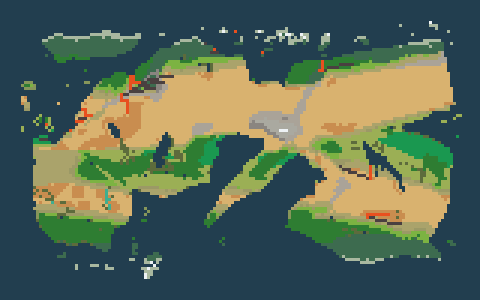
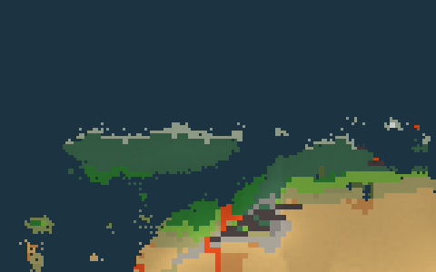
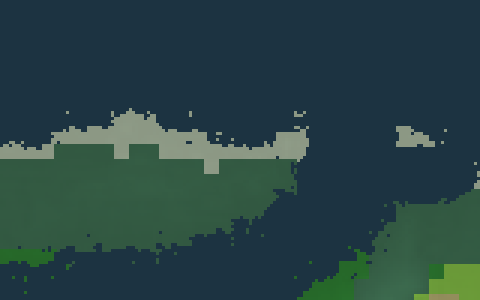
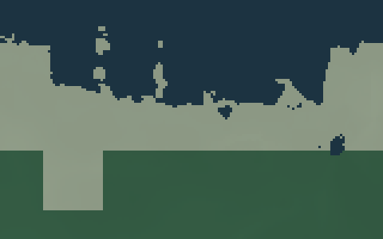
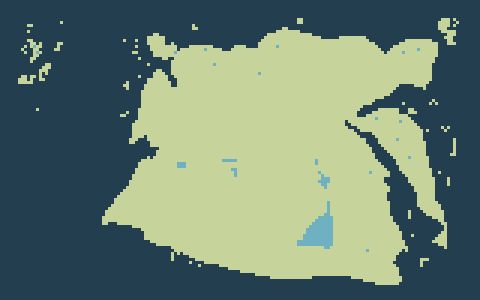
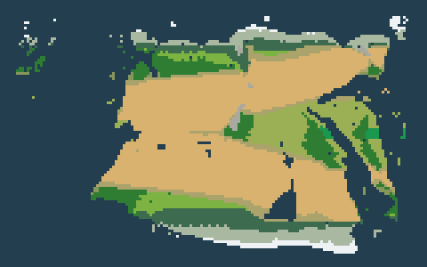

Identical settings; different seeds. Full terrain, archipelago, erosion and hydrology pipeline. Green: land. Blue: ocean-connected water. Pale blue: inland water. One cell represents the same geographic scale in every panel. No smoothing or decorative coast noise is added by this gallery.
aridityIndex — same seed; coastal zooms share focus (42.0, 12.0). Brown: AI 0; blue: AI ≥2. Desert <0.25; steppe 0.25–0.50; dry subhumid 0.50–0.65.

biome — same seed; coastal zooms share focus (42.0, 12.0).

continental-zoom — same seed; coastal zooms share focus (42.0, 12.0).

regional-zoom — same seed; coastal zooms share focus (42.0, 12.0).

local-zoom — same seed; coastal zooms share focus (42.0, 12.0).
Seed 6

Seed 6 Land 43.4%; 1 major continents; 22 archipelagos Largest: 6796 cells; aspect 1.22; hull solidity 0.80; deepest bay 30.9 cellsLayout family: scattered-remnants. Major areas: [6796] cells; shortest strait 0.00 cells (open-ocean preference 8.0). Open ocean 67.0%; connected ocean 98.5%; ocean-frame violations 0. Visible archipelagos 18; emerged island area 149 cells; island size tiers map[large:0 medium:4 rocks:35 small:10].

climate — same seed; coastal zooms share focus (105.0, 91.0).precipitation — same seed; coastal zooms share focus (105.0, 91.0). Brown: 0; blue: ≥3000 mm/year.aridityIndex — same seed; coastal zooms share focus (105.0, 91.0). Brown: AI 0; blue: AI ≥2. Desert <0.25; steppe 0.25–0.50; dry subhumid 0.50–0.65.biome — same seed; coastal zooms share focus (105.0, 91.0).continental-zoom — same seed; coastal zooms share focus (105.0, 91.0).regional-zoom — same seed; coastal zooms share focus (105.0, 91.0).local-zoom — same seed; coastal zooms share focus (105.0, 91.0).
Seed 7
Seed 7 Land 37.6%; 4 major continents; 29 archipelagos Largest: 3772 cells; aspect 1.74; hull solidity 0.76; deepest bay 29.8 cellsLayout family: clustered. Major areas: [3772 1437 220 201] cells; shortest strait 1.24 cells (open-ocean preference 8.0). Open ocean 56.9%; connected ocean 99.2%; ocean-frame violations 0. Visible archipelagos 24; emerged island area 357 cells; island size tiers map[large:1 medium:11 rocks:34 small:15].climate — same seed; coastal zooms share focus (63.0, 87.0).precipitation — same seed; coastal zooms share focus (63.0, 87.0). Brown: 0; blue: ≥3000 mm/year.aridityIndex — same seed; coastal zooms share focus (63.0, 87.0). Brown: AI 0; blue: AI ≥2. Desert <0.25; steppe 0.25–0.50; dry subhumid 0.50–0.65.biome — same seed; coastal zooms share focus (63.0, 87.0).continental-zoom — same seed; coastal zooms share focus (63.0, 87.0).regional-zoom — same seed; coastal zooms share focus (63.0, 87.0).local-zoom — same seed; coastal zooms share focus (63.0, 87.0).
Seed 8
Seed 8 Land 38.7%; 1 major continents; 29 archipelagos Largest: 5849 cells; aspect 2.42; hull solidity 0.62; deepest bay 35.6 cellsLayout family: hemispheric. Major areas: [5849] cells; shortest strait 0.00 cells (open-ocean preference 8.0). Open ocean 60.3%; connected ocean 99.5%; ocean-frame violations 0. Visible archipelagos 26; emerged island area 250 cells; island size tiers map[large:0 medium:7 rocks:39 small:21].climate — same seed; coastal zooms share focus (19.0, 36.0).precipitation — same seed; coastal zooms share focus (19.0, 36.0). Brown: 0; blue: ≥3000 mm/year.aridityIndex — same seed; coastal zooms share focus (19.0, 36.0). Brown: AI 0; blue: AI ≥2. Desert <0.25; steppe 0.25–0.50; dry subhumid 0.50–0.65.biome — same seed; coastal zooms share focus (19.0, 36.0).continental-zoom — same seed; coastal zooms share focus (19.0, 36.0).regional-zoom — same seed; coastal zooms share focus (19.0, 36.0).local-zoom — same seed; coastal zooms share focus (19.0, 36.0).
Seed 9
Seed 9 Land 42.5%; 2 major continents; 23 archipelagos Largest: 5774 cells; aspect 2.24; hull solidity 0.60; deepest bay 35.2 cellsLayout family: elongated-belt. Major areas: [5774 669] cells; shortest strait 3.24 cells (open-ocean preference 8.0). Open ocean 50.9%; connected ocean 99.1%; ocean-frame violations 0. Visible archipelagos 22; emerged island area 332 cells; island size tiers map[large:2 medium:9 rocks:32 small:20].climate — same seed; coastal zooms share focus (22.0, 50.0).precipitation — same seed; coastal zooms share focus (22.0, 50.0). Brown: 0; blue: ≥3000 mm/year.aridityIndex — same seed; coastal zooms share focus (22.0, 50.0). Brown: AI 0; blue: AI ≥2. Desert <0.25; steppe 0.25–0.50; dry subhumid 0.50–0.65.biome — same seed; coastal zooms share focus (22.0, 50.0).continental-zoom — same seed; coastal zooms share focus (22.0, 50.0).regional-zoom — same seed; coastal zooms share focus (22.0, 50.0).local-zoom — same seed; coastal zooms share focus (22.0, 50.0).
Seed 10
Seed 10 Land 37.4%; 3 major continents; 26 archipelagos Largest: 5217 cells; aspect 2.13; hull solidity 0.57; deepest bay 37.2 cellsLayout family: clustered. Major areas: [5217 267 262] cells; shortest strait 2.61 cells (open-ocean preference 8.0). Open ocean 49.5%; connected ocean 99.8%; ocean-frame violations 0. Visible archipelagos 24; emerged island area 212 cells; island size tiers map[large:1 medium:5 rocks:35 small:16].climate — same seed; coastal zooms share focus (77.0, 44.0).precipitation — same seed; coastal zooms share focus (77.0, 44.0). Brown: 0; blue: ≥3000 mm/year.aridityIndex — same seed; coastal zooms share focus (77.0, 44.0). Brown: AI 0; blue: AI ≥2. Desert <0.25; steppe 0.25–0.50; dry subhumid 0.50–0.65.biome — same seed; coastal zooms share focus (77.0, 44.0).continental-zoom — same seed; coastal zooms share focus (77.0, 44.0).regional-zoom — same seed; coastal zooms share focus (77.0, 44.0).local-zoom — same seed; coastal zooms share focus (77.0, 44.0).
Seed 11
Seed 11 Land 43.4%; 1 major continents; 29 archipelagos Largest: 6611 cells; aspect 1.51; hull solidity 0.81; deepest bay 36.3 cellsLayout family: dominant-and-fragments. Major areas: [6611] cells; shortest strait 0.00 cells (open-ocean preference 8.0). Open ocean 62.1%; connected ocean 98.4%; ocean-frame violations 0. Visible archipelagos 26; emerged island area 250 cells; island size tiers map[large:0 medium:9 rocks:30 small:14].climate — same seed; coastal zooms share focus (62.0, 42.0).precipitation — same seed; coastal zooms share focus (62.0, 42.0). Brown: 0; blue: ≥3000 mm/year.aridityIndex — same seed; coastal zooms share focus (62.0, 42.0). Brown: AI 0; blue: AI ≥2. Desert <0.25; steppe 0.25–0.50; dry subhumid 0.50–0.65.biome — same seed; coastal zooms share focus (62.0, 42.0).continental-zoom — same seed; coastal zooms share focus (62.0, 42.0).regional-zoom — same seed; coastal zooms share focus (62.0, 42.0).local-zoom — same seed; coastal zooms share focus (62.0, 42.0).
Seed 12
Seed 12 Land 42.5%; 2 major continents; 29 archipelagos Largest: 5750 cells; aspect 2.27; hull solidity 0.69; deepest bay 34.8 cellsLayout family: elongated-belt. Major areas: [5750 874] cells; shortest strait 1.83 cells (open-ocean preference 8.0). Open ocean 59.3%; connected ocean 97.3%; ocean-frame violations 0. Visible archipelagos 23; emerged island area 180 cells; island size tiers map[large:0 medium:7 rocks:28 small:12].climate — same seed; coastal zooms share focus (35.0, 55.0).precipitation — same seed; coastal zooms share focus (35.0, 55.0). Brown: 0; blue: ≥3000 mm/year.aridityIndex — same seed; coastal zooms share focus (35.0, 55.0). Brown: AI 0; blue: AI ≥2. Desert <0.25; steppe 0.25–0.50; dry subhumid 0.50–0.65.biome — same seed; coastal zooms share focus (35.0, 55.0).continental-zoom — same seed; coastal zooms share focus (35.0, 55.0).regional-zoom — same seed; coastal zooms share focus (35.0, 55.0).local-zoom — same seed; coastal zooms share focus (35.0, 55.0).
Seed 13
Seed 13 Land 38.2%; 1 major continents; 29 archipelagos Largest: 5870 cells; aspect 1.86; hull solidity 0.59; deepest bay 40.2 cellsLayout family: scattered-remnants. Major areas: [5870] cells; shortest strait 0.00 cells (open-ocean preference 8.0). Open ocean 59.3%; connected ocean 99.2%; ocean-frame violations 0. Visible archipelagos 26; emerged island area 219 cells; island size tiers map[large:2 medium:5 rocks:33 small:10].climate — same seed; coastal zooms share focus (85.0, 50.0).precipitation — same seed; coastal zooms share focus (85.0, 50.0). Brown: 0; blue: ≥3000 mm/year.aridityIndex — same seed; coastal zooms share focus (85.0, 50.0). Brown: AI 0; blue: AI ≥2. Desert <0.25; steppe 0.25–0.50; dry subhumid 0.50–0.65.biome — same seed; coastal zooms share focus (85.0, 50.0).continental-zoom — same seed; coastal zooms share focus (85.0, 50.0).regional-zoom — same seed; coastal zooms share focus (85.0, 50.0).local-zoom — same seed; coastal zooms share focus (85.0, 50.0).
Seed 14
Seed 14 Land 42.0%; 1 major continents; 20 archipelagos Largest: 6635 cells; aspect 1.63; hull solidity 0.80; deepest bay 39.1 cellsLayout family: clustered. Major areas: [6635] cells; shortest strait 0.00 cells (open-ocean preference 8.0). Open ocean 71.2%; connected ocean 99.0%; ocean-frame violations 0. Visible archipelagos 14; emerged island area 86 cells; island size tiers map[large:0 medium:1 rocks:26 small:8].climate — same seed; coastal zooms share focus (58.0, 50.0).precipitation — same seed; coastal zooms share focus (58.0, 50.0). Brown: 0; blue: ≥3000 mm/year.aridityIndex — same seed; coastal zooms share focus (58.0, 50.0). Brown: AI 0; blue: AI ≥2. Desert <0.25; steppe 0.25–0.50; dry subhumid 0.50–0.65.biome — same seed; coastal zooms share focus (58.0, 50.0).continental-zoom — same seed; coastal zooms share focus (58.0, 50.0).regional-zoom — same seed; coastal zooms share focus (58.0, 50.0).local-zoom — same seed; coastal zooms share focus (58.0, 50.0).
Seed 15
Seed 15 Land 42.5%; 2 major continents; 22 archipelagos Largest: 3923 cells; aspect 1.33; hull solidity 0.85; deepest bay 19.3 cellsLayout family: hemispheric. Major areas: [3923 2672] cells; shortest strait 4.39 cells (open-ocean preference 8.0). Open ocean 60.5%; connected ocean 99.0%; ocean-frame violations 0. Visible archipelagos 18; emerged island area 152 cells; island size tiers map[large:0 medium:3 rocks:30 small:12].climate — same seed; coastal zooms share focus (51.0, 10.0).precipitation — same seed; coastal zooms share focus (51.0, 10.0). Brown: 0; blue: ≥3000 mm/year.aridityIndex — same seed; coastal zooms share focus (51.0, 10.0). Brown: AI 0; blue: AI ≥2. Desert <0.25; steppe 0.25–0.50; dry subhumid 0.50–0.65.biome — same seed; coastal zooms share focus (51.0, 10.0).continental-zoom — same seed; coastal zooms share focus (51.0, 10.0).regional-zoom — same seed; coastal zooms share focus (51.0, 10.0).local-zoom — same seed; coastal zooms share focus (51.0, 10.0).
Seed 16
Seed 16 Land 40.9%; 2 major continents; 24 archipelagos Largest: 6122 cells; aspect 2.16; hull solidity 0.67; deepest bay 37.2 cellsLayout family: elongated-belt. Major areas: [6122 188] cells; shortest strait 2.16 cells (open-ocean preference 8.0). Open ocean 59.3%; connected ocean 99.3%; ocean-frame violations 0. Visible archipelagos 22; emerged island area 207 cells; island size tiers map[large:1 medium:5 rocks:34 small:7].climate — same seed; coastal zooms share focus (13.0, 38.0).precipitation — same seed; coastal zooms share focus (13.0, 38.0). Brown: 0; blue: ≥3000 mm/year.aridityIndex — same seed; coastal zooms share focus (13.0, 38.0). Brown: AI 0; blue: AI ≥2. Desert <0.25; steppe 0.25–0.50; dry subhumid 0.50–0.65.biome — same seed; coastal zooms share focus (13.0, 38.0).continental-zoom — same seed; coastal zooms share focus (13.0, 38.0).regional-zoom — same seed; coastal zooms share focus (13.0, 38.0).local-zoom — same seed; coastal zooms share focus (13.0, 38.0).
Seed 17
Seed 17 Land 41.6%; 2 major continents; 29 archipelagos Largest: 5987 cells; aspect 2.18; hull solidity 0.64; deepest bay 35.8 cellsLayout family: clustered. Major areas: [5987 178] cells; shortest strait 2.16 cells (open-ocean preference 8.0). Open ocean 53.9%; connected ocean 98.1%; ocean-frame violations 0. Visible archipelagos 27; emerged island area 291 cells; island size tiers map[large:1 medium:10 rocks:45 small:13].climate — same seed; coastal zooms share focus (86.0, 57.0).precipitation — same seed; coastal zooms share focus (86.0, 57.0). Brown: 0; blue: ≥3000 mm/year.aridityIndex — same seed; coastal zooms share focus (86.0, 57.0). Brown: AI 0; blue: AI ≥2. Desert <0.25; steppe 0.25–0.50; dry subhumid 0.50–0.65.biome — same seed; coastal zooms share focus (86.0, 57.0).continental-zoom — same seed; coastal zooms share focus (86.0, 57.0).regional-zoom — same seed; coastal zooms share focus (86.0, 57.0).local-zoom — same seed; coastal zooms share focus (86.0, 57.0).
Seed 18
Seed 18 Land 43.4%; 2 major continents; 27 archipelagos Largest: 5607 cells; aspect 2.21; hull solidity 0.69; deepest bay 35.6 cellsLayout family: dominant-and-fragments. Major areas: [5607 1012] cells; shortest strait 4.39 cells (open-ocean preference 8.0). Open ocean 53.1%; connected ocean 98.8%; ocean-frame violations 0. Visible archipelagos 25; emerged island area 297 cells; island size tiers map[large:1 medium:9 rocks:31 small:13].climate — same seed; coastal zooms share focus (51.0, 38.0).precipitation — same seed; coastal zooms share focus (51.0, 38.0). Brown: 0; blue: ≥3000 mm/year.aridityIndex — same seed; coastal zooms share focus (51.0, 38.0). Brown: AI 0; blue: AI ≥2. Desert <0.25; steppe 0.25–0.50; dry subhumid 0.50–0.65.biome — same seed; coastal zooms share focus (51.0, 38.0).continental-zoom — same seed; coastal zooms share focus (51.0, 38.0).regional-zoom — same seed; coastal zooms share focus (51.0, 38.0).local-zoom — same seed; coastal zooms share focus (51.0, 38.0).
Seed 19
Seed 19 Land 43.2%; 3 major continents; 28 archipelagos Largest: 5121 cells; aspect 2.15; hull solidity 0.64; deepest bay 34.1 cellsLayout family: elongated-belt. Major areas: [5121 999 322] cells; shortest strait 1.83 cells (open-ocean preference 8.0). Open ocean 53.6%; connected ocean 98.8%; ocean-frame violations 0. Visible archipelagos 24; emerged island area 273 cells; island size tiers map[large:2 medium:7 rocks:30 small:9].climate — same seed; coastal zooms share focus (16.0, 52.0).precipitation — same seed; coastal zooms share focus (16.0, 52.0). Brown: 0; blue: ≥3000 mm/year.aridityIndex — same seed; coastal zooms share focus (16.0, 52.0). Brown: AI 0; blue: AI ≥2. Desert <0.25; steppe 0.25–0.50; dry subhumid 0.50–0.65.biome — same seed; coastal zooms share focus (16.0, 52.0).continental-zoom — same seed; coastal zooms share focus (16.0, 52.0).regional-zoom — same seed; coastal zooms share focus (16.0, 52.0).local-zoom — same seed; coastal zooms share focus (16.0, 52.0).
Model: filled-union-2 continental fields and coastal-sdf-1 detail. Count and separation are preferences; collision and rifting can merge or split foundations. Major continents are connected components covering at least 1% of the map. Gaps measure shortest Euclidean coast-cell distances minus one, including wrapping; a zero for one continent means no pair exists. Open ocean is water at least half the selected preference from shore. Bounded sea-level adjustment precedes islands, lakes and erosion, so coverage is approximate. Island tiers: rocks 1–2 cells, small 3–8, medium 9–31, large 32+. Local zoom reveals additional shoreline topology inside a 1.75-cell coastal band; every coarse anchor is retained. Old saved worlds keep their stored geography.